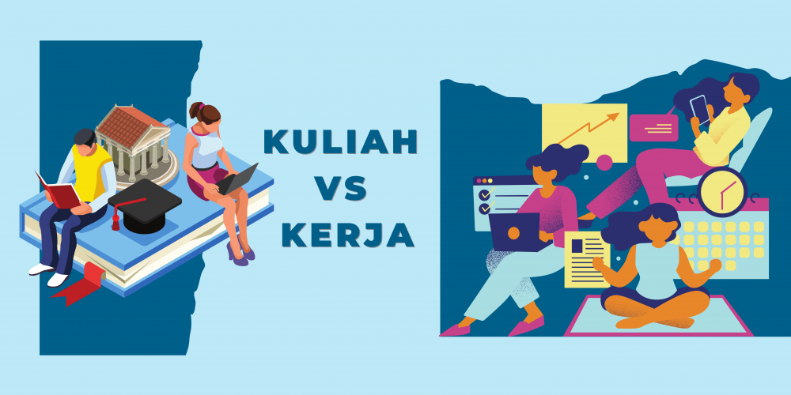

Simulasi Mata Kuliah Nyata
Fitur yang memungkinkan pengguna mencoba contoh tugas kuliah, mini project sederhana, serta melihat gambaran aktivitas belajar dari berbagai jurusan sebelum benar-benar memilihnya.
Fitur yang memungkinkan pengguna mencoba contoh tugas kuliah, mini project sederhana, serta melihat gambaran aktivitas belajar dari berbagai jurusan sebelum benar-benar memilihnya.
Menyediakan data pekerjaan nyata lulusan, kisaran gaji, jenjang karier, serta skill yang benar-benar digunakan di dunia kerja agar tidak salah ekspektasi terhadap jurusan.
Tes berbasis studi kasus dan problem solving yang membantu pengguna mengenali cara berpikirnya, bukan hanya berdasarkan minat semata.

Berisi pengalaman nyata alumni yang bekerja sesuai jurusan maupun yang beralih karier, memberikan gambaran realita setelah lulus kuliah.